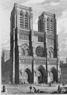

Notre Dame Gotik Katedrali, Paris’in ortasındaki Sen Nehri üzerinde bulunan Ile de la Cite adlı adacığın doğu kısmında konumlanmıştır.

Katedral, 528’de bir Hıristiyan kilisesinin yerini aldığı, Jüpiter’e adanan antik bir Roma tapınağı alanına inşa edilmiştir. Yakın zamanda (1144) restore edilmiş Saint Denis Abbey Kilisesi’nin azametinden ilham alan Piskopos Maurice de Sully, Paris’in eski kilisesini yıkmaya ve yerine daha büyüğünü inşa ettirmeye karar verdi. Yeni katedralin inşaatı 1163’te başladı ve on dördüncü yüzyılın başlarına kadar devam etti.
Çoğu Gotik katedralde olduğu gibi, Notre Dame’ın dış cephesi de üç katlıdır. Bunların üzerinde, yaratık şeklinde heykelciklerle –şeytani ruhları kiliseden uzakta tuttuğuna inanılan çirkin ve ürkütücü canavarların heykelleri– bezeli bir kemerle bağlanan iki kule yükselir. Kemerin altında, yüzlerce boyalı cam parçasının bir araya getirilmesiyle yapılan ve çapı dokuz metreden fazla olan gül şeklinde bir pencere vardır.
Daha aşağısında, başlangıçta Yahuda ve İsrail’in yirmi dokuz kralının heykellerini içeren Kral Kemeri vardı. Fransız Devrimi sırasında, figürlerin Fransız krallarının portreleri olduğunu sanan kızgın yağmacılar tarafından hepsinin başı koparıldı. Heykeller, 1845’te ünlü Fransız mimar Viollet-le-Duc tarafından yapılan yenileriyle değiştirildi.
Dış cephede, kiliseye üç ana giriş bulunur. Merkezî ve en geniş giriş kapısı, kıyamet günü gelecek olan İsa’ya adanmıştır. Solundaki kapı Meryem’in, sağındaki ise Meryem’in annesi Azize Anne’nin giriş kapısıdır.
Katedralin zengin bir geçmişi vardır. Burası, 1185’te Caesarealı (Kayseri) Heraklius’un Üçüncü Haçlı Seferi’ni ilan ettiği yerdi. 1431’de, VI. Henry’nin ve 1804’te de Napoleon Bonaparte’ın taç giyme törenine sahne oldu. Kilise, Fransız Devrimi sırasında ilk olarak “Akıl Tapınağı”, sonrasında da “Yüce Varlık Tapınağı” (Temple of the Supreme Being) adını aldı. 1970’te Charles de Gaulle’ün cenaze töreni için kullanıldı.
EK BİLGİLER:
1. Victor Hugo Notre Dame’ın Kamburu’nu (1831) yapının yıkılma tehlikesi altında olduğu sıralarda, Notre Dame’ın tarihine dair halkın bilincini ve hassasiyetini arttırmak için yazdı.
2. Fransız otoyollarında ölçülen tüm mesafeler için başlangıç noktası olarak işaretlenen sıfır kilometresi, katedralin önündeki meydanda konumlanmıştır.